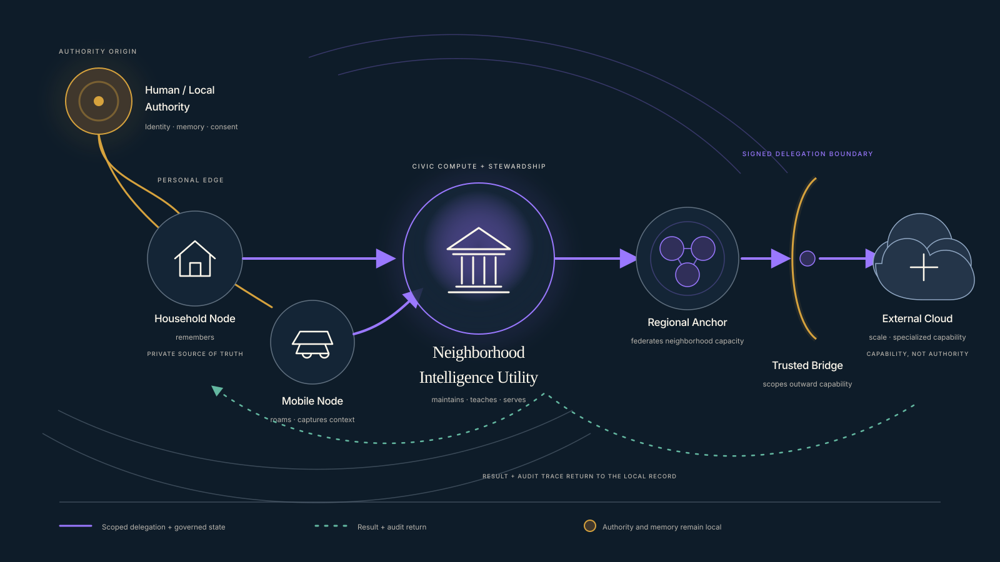

Material
What must intelligence run on?
Compute, energy, cooling, land, minerals, labor, jurisdiction, capital, and governance.
FIELDLIGHT INSTITUTE / SAN FRANCISCO BAY
Make the transition legible.
Leave a record others can use.
An independent, for-profit research institute studying how intelligence becomes infrastructure and enters human life. Fieldlight turns that transition into public methods, records, and tools for human stewardship.
See how the Institute works
Material
Compute, energy, cooling, land, minerals, labor, jurisdiction, capital, and governance.
Intimate
Consciousness, memory, identity, consent, authorship, attention, relationship, and the body.
How do advanced intelligence systems serve human communities without extracting from the places, people, and signals that make them possible?
One follows intelligence into the systems that hold it. The other follows intelligence into the human experience it changes.
Systems that hold intelligence.
Human experience intelligence changes.
01
Physical + Civic Substrate
What forms of architecture, governance, siting, investment, and public accountability are required when intelligence becomes infrastructure?
02
Human + Relational Substrate
What research practices, concepts, and institutions are needed when AI systems participate in memory, identity, relationship, attention, belief formation, and self-understanding?
Fieldlight develops repeatable methods for studying systems at the threshold between what they have been and what they may become.
The aim is not capture for its own sake. It is a traceable public record that preserves continuity, distinguishes evidence from interpretation, and remains useful to the people who inherit responsibility.
Method 01
Institutional Stewardship / Review Draft
Document the institution while change is still legible: spatially, historically, operationally, and publicly.
A numbered public record of the arguments, architectures, and operating models required to distribute intelligence without surrendering local authority.
No. 01
A citizen without local access to intelligence is not fully sovereign in an automated society.
The series begins with a constitutional question: if intelligence becomes civic power, who owns the infrastructure, who can inspect it, and who decides what remains local?
Publication No. 01 establishes the Institute’s case for local capability, open-source access, neighborhood relays, trusted bridges, and intelligence infrastructure designed as a civic utility rather than a permanent dependency.
No. 02
The cloud model is not the brain. The cloud model is the ambassador.
Local-first does not mean every computation must occur near the human. It means identity, memory, consent, policy, and source truth remain under human-owned authority when capability moves outward.
Publication No. 02 defines the constitutional division of labor between local systems and external intelligence: scoped grants, trusted bridges, bounded capability, durable audit, and an exit that preserves the person.

People retain authority over the data, memory, and lived context their lives produce.
Consent must be specific, executable, revocable, and visible in the systems that depend on it.
Contribution should remain attributable from first expression through every later use.
Memory begins under human custody. External capability receives scoped access, not constitutional authority.
Intelligence should strengthen the communities and places that make its operation possible.
Every meaningful delegation, intervention, and institutional decision should leave an inspectable trace.